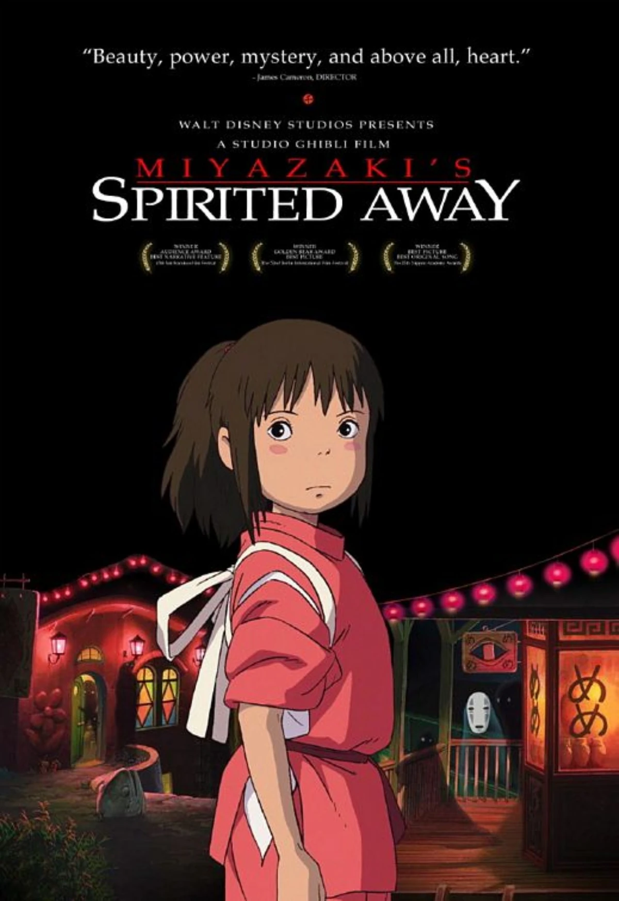
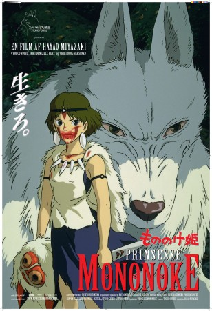
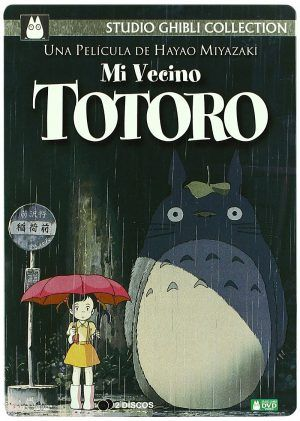
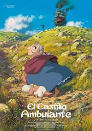
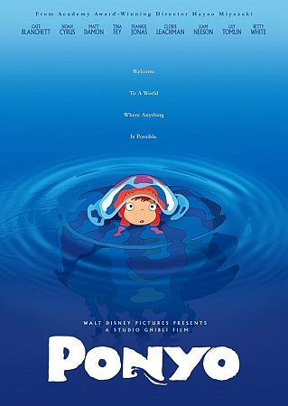
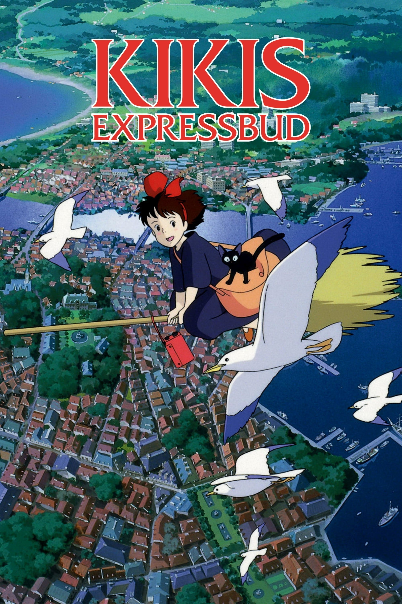

RANKING
RANKING
Studio Ghibli es un estudio de animación japonés fundado en 1985 por Hayao Miyazaki, Isao Takahata y Toshio Suzuki. El estudio es conocido por sus películas animadas, cortometrajes, comerciales de televisión y películas para televisión ,como El viaje de Chihiro y Mi vecino Totoro.
Mis peliculas favoritas
Mientras Chihiro y sus padres se trasladan a su residencia, se equivocan de camino y llegan hasta un edificio con un túnel en el que se adentran, encontrando un pueblo fantasma y con ello un gran banquete. La cinta nos lleva a través del viaje que tiene chihiro para recuperar su vida y a sus padres.
Con el fin de curar la herida que le ha causado un jabalí enloquecido, el joven Ashitaka sale en busca del dios Ciervo, pues sólo él puede liberarlo del sortilegio. A lo largo de su periplo descubre cómo los animales del bosque luchan contra hombres que están dispuestos a destruir la Naturaleza. (by FILMAFFINITY)
Cinta que te traslada a los años 50 de un japón antiguo, cuenta la historia de las pequeñas Satsuki y Mei, las cuales se hacen amigas de una criatura mágica y esponjosa.
La cinta muestra la histora de Sophie, una joven sombrerera la cual sufre de una maldición, con el proposito de conseguir ayuda, acude al mago howl el cual vive en un pintoresco y ambulante castillo.
La cinta se centra en la historia de Sosuke un niño de 5 años y su amiga imprevista, una princesa pez que desea volverse humano.
La cinta nos cuenta la historia de kiki una joven bruja de 13 años, la cual tiene que vivir un año sola como preparación para su vida adulta. Nos muestra las divertidas aventuras de kiki.
Si quieres que aparezca un ranking del tema de tu interés, contáctanos. Estamos emocionados de conocer tus gustos.